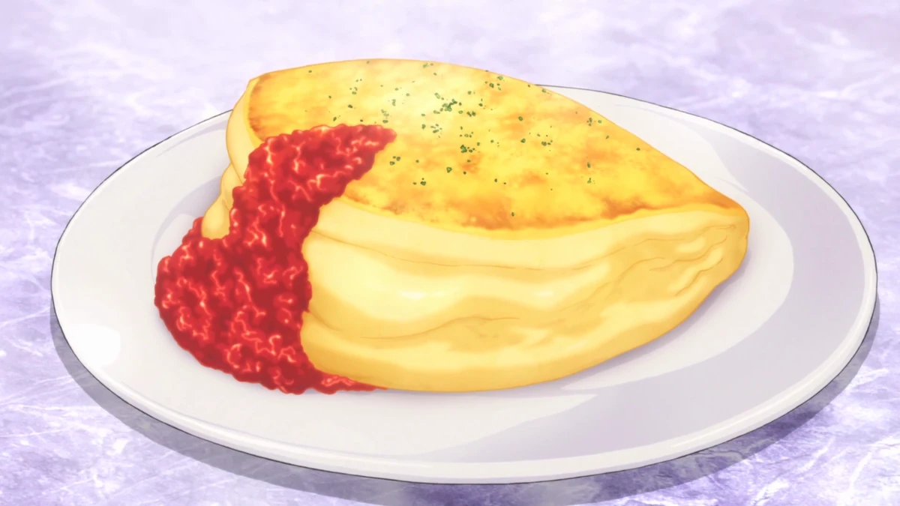
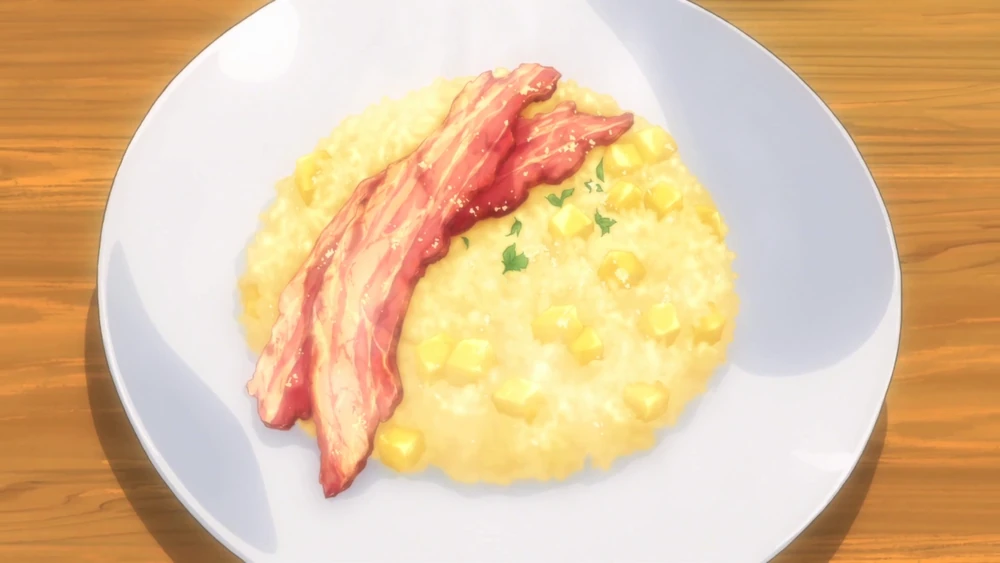

Mini Soufflé Omelette
Коротко: пухка суфле-омлетка — швидко готується, треба подавати одразу.
Інгредієнти (2 порції): 2 яйця (розділити), 1 ст.л. вершків, сіль, перець, 1 ч.л. вершкового масла.
- Збити білки до мʼяких пік.
- Змішати жовтки з вершками, обережно ввести у білки.
- Викласти масу у розігріту пательню з маслом, накрити кришкою на 2–3 хв. — подавати одразу.
Chicken Egg Tempura Don
Коротко: миска рису з куркою й «темпура-яйцем» (яйце заморожують і обсмажують у темпурному клярі).
Інгредієнти (1 порція): 1 яйце (заморозити), темпурний кляр, 100–150 г вареного рису, кусочки обсмаженої/гриль курки, соус (соя/даші).
- Заморозити яйце ~2–3 год. (щоб зберегти форму) і вмочити в кляр.
- Швидко обсмажити у фритюрі до золотистого — яйце має залишитись желеподібним всередині.
- Покласти рис, зверху курку і темпура-яйце; трохи соусу — готово.
Лайфхаки з аніме (коротко)
- Заморожування яйця — техніка для темпура-яйця: допомагає зберегти форму і досягти желеподібного жовтка.
- Збивати білки сильно для суфле — пухкість залежить від стійких пік білків; подавати відразу.
- Баланс солодкого й солоного: яблуко в ризото додає кислинку — регулюй солоність і вершковість під смак.
- Сильний прижар + відпочинок мʼяса: дає карамелізовану кірочку і збереження соку в свинині.
- Yukihira-style: не бійся експериментувати — дегустуй під час приготування і підганяй смак.
Apple Risotto
Коротко: кремове ризото з кислинкою яблук і копченістю бекону (опційно).
Інгредієнти (2 порції): 1 скл. арборіо, 1–2 яблука (нарізані), 0,5 цибулі, 2 ст.л. масла, 0,5 скл. білого вина, ~2 скл. бульйону/яблучного соку, шматочки бекону, пармезан.
- Обсмажити цибулю, додати рис — трохи підсмажити.
- Деглазувати вином, потім поступово доливати теплий бульйон/яблучний сік, помішуючи, поки ризото не стане кремовим.
- Додати шматочки яблука і бекон, довести до готовності; зняти з вогню — додати масло і пармезан.
Roast Pork — «Just Kidding / Gotcha Pork»

Коротко: імпровізована «готча»-свиняча ніжність — в аніме Сома готував простий, але смачний варіант, що імітує справжній ростбіф.
Інгредієнти (4 порції): 800 г свинячої плечової частини, сіль, перець, часник, соєвий/медовий маринад (за бажанням).
- Натріть свинину сіллю/перцем, (маринад опційно) — обсмажити поверхню сильно для скоринки.
- Дозапекти в духовці при ~160–170°С до внутрішньої температури ~65–70°С, потім дати відпочити 10–15 хв.
- Нарізати тонко й подавати з картопляним пюре або салатом.